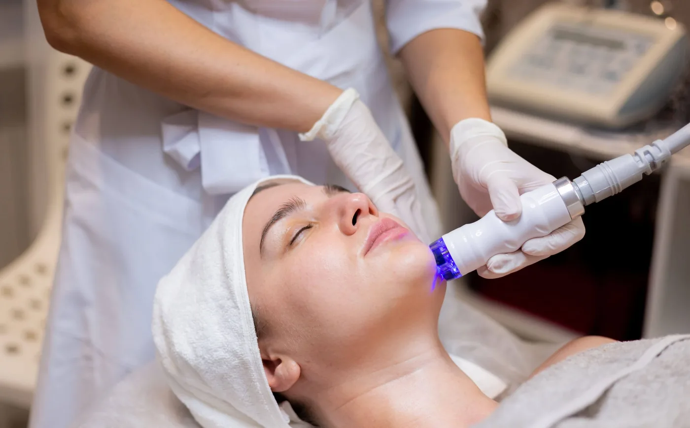
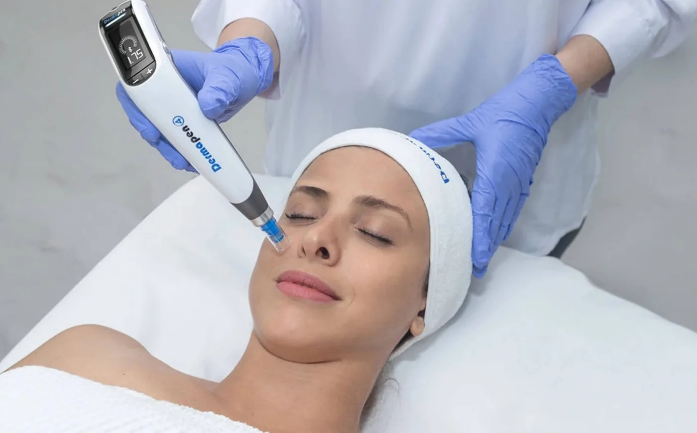
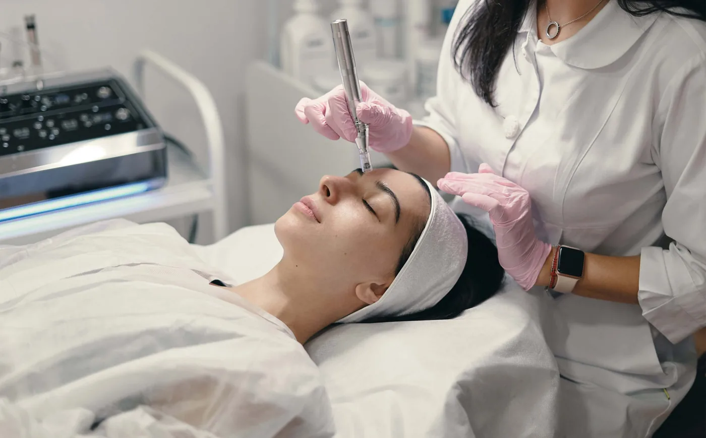

Don’t give up! You can too achieve smooth and clear skin with these treatments I’m recommending. Shhh…
Hi there, beautiful! Listen to me. You might be feeling very insecure and self-aware of how people perceive you at the moment. The redness, the tiny bumps that hurt when you accidentally press against, and the constant look they make when talking to you, can potentially bring down your confidence. And, I get it! It’s not something you asked for, and to some, even have done your ultimate best to get them cured. But, let me tell you something, you are as gorgeous and charming as you are. I understand there are some issues you are dealing with with your appearance. However, when I say there’s always a solution for everything, I mean it… truthfully.
Acne treatment, spot treatment, acne scars, large pores; I have had so many patients coming through my clinic doors asking for a cure. I’m no magician nor a miracle-maker like Mary Poppins. But, I sure am very confident in trusting my patients with the treatment they need. Everyone deserves self-love, and I wish you would do the same too.
So, if you have been feeling worn out by the endless cycle of trying out new skincare, new acne treatment, and super-viral spot treatment, just to feel more comfortable in your own natural skin, then I am here to get rid of the hassle and recommend you with the treatments you actually need. So buckle up, and let’s get going, beautiful.
(Spoiler! You may no longer need to cover up your “flaws” with makeup once you’ve done with these treatments)
Acne is one of the most common skin problems and there are treatments out there to treat it!
Most Common Cause of Acne My Patients Had
Believe it or not, 90% of my patients who ask me to “fix” their skin don’t actually have anything “wrong” with their skin. In fact, I can say that their skin is perfectly normal and healthy. Beautiful as they are! However, it is hormonal issues that made the situation worse!
Roughly, it is estimated that 40% of teenagers and young adults suffer from severe acne due to a hormonal imbalance. Plus, the humid weather in Malaysia causes the skin to increase oil production, trying to keep up with the moisture balance in the air.
Hence, that is why we need to tackle severe acne from its roots. So, here are the 3 Best Budget-Friendly Acne Treatments recommended by yours truly, Dr. Abby.

Theraclear Acne Therapy offers many benefits and it’s safe, completely pain free!
Theraclear Acne Therapy (10 Minutes to a 90% Success Rate!)
Theraclear Acne Therapy combines vacuum with a source of IPL (intense pulsed light) treatment, designed to target cystic, inflammatory, nodulocystic, comedonal, and pustular acne on the skin. It directly interacts with acne-causing bacteria underlying the skin to unblock pores, destroy acne bacteria, relieves congestions at the pilo-sebaceous unit, reduce redness, and control sebum production; and photo rejuvenates skin all at the same time!
It works by delivering a strong but gentle suction power to the blocked pores using a special vacuum, extracting the trapped sebum. The blue light IPL treatment then targets and destroys the acne-causing bacteria as well as the sebaceous gland to prevent further excess sebum production. Acne cysts will be punctured and debris removed, providing immediate relief and aesthetic benefit.
Through this treatment, patients will have clearer skin, reduced pores, and flattened acne lesions which will disappear as early as 72 hours and gradually gets better over time.
Recommended treatment intervals varies from every 5 to 7 days, depending on the severity and stage of acne you are in.
Best thing about this treatment is, it is a comfortable treatment, suits all skin types, safe for teenagers and adults, and also for all skin types. Downtime is minimal to zero making it a best option for everybody.

Dermapen 4 Microneedling isn’t just for wrinkles and scars, it can help target acnes too!
Dermapen 4 Microneedling; the miracle treatment for Acne Vulgaris.
Automated Microneedling works by causing controlled trauma to the skin with tiny micro punctures, I’m talking tiny channels. With the revolutionary Dermapen 4 Microneedling, this phenomenon is done with ultimate precision and safety, ultimately encouraging collagen induction which means triggering the skin’s natural collagen production also known as ‘neocollagenesis’. At the same time, serum containing specific blends of active substances (eg. hyaluronic acid, zinc, niacinamide, copper peptides, vitamin C, etc) are infused concurrently during micro-needling, allowing the skin-loving ingredients to penetrate deep into the skin much faster and better and nourish the skin!
During every automated Dermapen 4 Microneedling procedure , approx. 2190 micropunctures occur every second. This great speed and precision makes the procedure a lot comfortable and quick (compared to other conventional microneedling devices), with minimal downtime compared to lasers.
I have to highlight the fact that thousand tiny micropunctures also mean thousand oxygen channels are being created which will wipe off the anaearobic P.Acne bacterias like fish out of water from the skin!
This allows the skin to renew faster via stimulation of natural growth factors such as EGF, Platelet derives growth factor, keratinocyte GF etc and replace the ‘old’ skin layers with healthier ‘newer’ skin cells. Interval of treatment for acne is recommended eery 4-6 weeks depending on the stage of acne you are in.
Based on my experience, a combination of both Theraclear Acne Therapy and Dermapen 4 microneedling works wonders for treatment of Acne no matter what stage of acne you are in!
Clinical skincare ingredients are tailored and potent to help tackle those stubborn acnes!
Clinical Skincare
Clinical skincare is very different from cosmetic skincare products (sold at drugstores). Clinical skincare is formulated with potent ingredients comprising of therapeutic doses of antioxidants, vitamins, and proteins and other active substances for skin health, that suggest functions beyond the common use of cosmetic products. On the other hand, most cosmetic skincare products have a minimal effect on the dermal layers of the skin due to their (usually) low concentration of active ingredients.
So why choose clinical skincare? Well, clinical skincare made by clinical and pharmaceutical experts is licensed and approved to have higher concentrations of active ingredients. Formulation of the products is proven effective and works better value for your budget. Remember, it’s not just about a one really great active ingredient. It’s the mixture of the right amounts of active ingredients working synergistically together.
However please be advised that one needs to be advised properly on which product and how to use clinical product as in the day and night steps involved .
This is my favorite part of consultation as I realized a lot of skin care experts out there miss out on this step . Trust me proper clinical skin care advise and its steps for home use contribute highly to the effectiveness of the entire treatment protocal and process.
The options of treatment may left you confused; so it’s important to see an expert to find a solution for your skin.
So, How Do I Know Which Treatment Works Best For My Skin?
My answers are,
Do come for a face to face consultation rather than purchasing random skincare treatment packages online.
Consult a real legitimate skin care expert as in a skin doctor or aesthetic doctor.
Combination therapy almost always gives the best treatment outcome.
Sure, you can opt for a single treatment if you are on a tight budget.
You can still see some great differences from just one session.
But, to achieve long term sustained improvement, getting a series of ‘maintenance’ treatments can bring wonders to your skin.

Consultation is important before proceeding to any form of treatments as doctors need to identify the root of your problems and offer the suitable solution.
Any Tips Before Starting Treatment?
Well, I would say, seeking treatment early is the best way to go!
If you feel like your “problematic” skin is bringing yourself down way too much than it should have, it is always a good suggestion to get the right diagnosis. Understand your skin issue, the proper acne treatment, and medications to help clear acne.
Please, I would always advise my patients not to self-treat acne at home. Sometimes the active ingredients you are using might not be as effective to your skin issue and may even aggravate your already sensitive or sensitized skin. Another thing, do not do your own chemical peel at home, and DIY microneedling is a no-no! You might cause even more injuries than before.
At Dr Abby Clinic, we offer solutions and treatments that are effective and safe to treat any of your skin problems.
#1 Best Reviewed Aesthetic Clinic in Malaysia
Your beauty is our duty. Dr. Abby Clinic is a personalized cosmetic medical clinic offering a wide range of aesthetic & anti-aging medicine services. We strive to be the most reliable, professional, result-oriented & friendly aesthetic in town! Because everybody deserves to look and feel good & be comfortable in their own skin!
Our clinic is a fully MOH registered clinic led by LCP Certified Doctors. So you can look fantastic, feel beautiful, and be confident in your own skin with no worries. Contact us today, and we will get started by giving you a thorough skin analysis.
See you!
Dr. Abby